Language Model Tasks#
Reference: Stanford CS224N
Question Answering#
What is question answering? The goal of question answering is to build a system that automatically answers questions posed by humans in a natural language.
Question answering can be done on structured or unstructured text. Today we focus on unstructured text. To understand and answer a question, a system must be able to comprehend the reading.
Reading comprehension and question-answering has applications in google search, personal assistants, and general intelligence in large.
Stanford question answering dataset (SQuAD) is a large question-answering dataset with 100k annotated triplets of (passage, question, answer). Answers are short segments of text in the passage. It’s the most popular question-answering dataset. Evaluation is done with an exact match (EM) which can be 0 or 1 and F1 which is partial credit. Estimated human performance on SQuAD is EM = 82.3, F1 = 91.2.
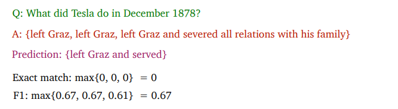
Figure 1. SQuAD evaluation.
The problem formulation for SQuAD is shown below:
Approaches to this problem come in 2 forms: LSTM-based methods and BERT models.
LSTM-Based Question Answering#
The Bidirectional Attention Flow (BiDAF) model is from a paper in 2017 that tackles SQuAD.
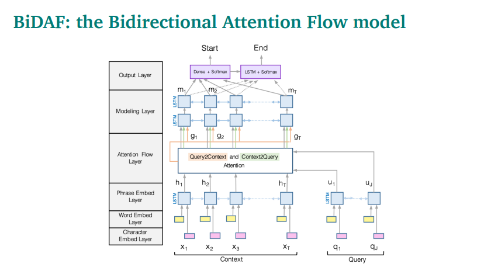
Figure 2. BiDAF Architecture.
It concatenates word embeddings and character embeddings to be fed into 2 bidirectional LSTMs which produce contextual embeddings for both context and query. Character-level embeddings are generated through a 1D CNN. Word-level embeddings are from GloVe.
The next set of layers is for the attention between the query statement and the context passage and vice versa.
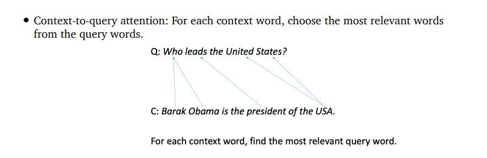
Figure 3. Context to query attention.
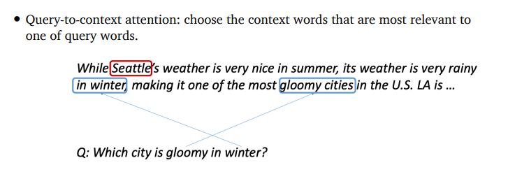
Figure 4. Query to Context attention.
The output from the attention flow layers gets passed to more bi-directional LSTMs. These are finally passed into an output layer.
BiDAF achieves 77.3 F1 on SQuAD.
BERT-based Question Answering#
BERT-based models outperform BiDAF by a ton! They leverage the BERT framework as the name suggests.
BiDAF and BERT models are fundamentally similar. They both model interactions between question and passage. BERT uses self-attention to model interactions within the passage, the question, passage and queestion, and question and passage.
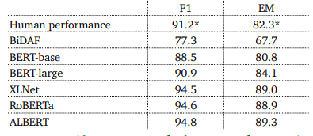
Figure 5. BiDAF vs BERT variants on SQuAD.
Even by exceeding human performance, these models aren’t perfect. They easily lose to adversarial examples.
Open-Domain Question Answering#
In Open-Domain question-answering, we don’t assume a given passage, but rather, a huge corpus of documents.
In this field, we use a retriever-reader framework.
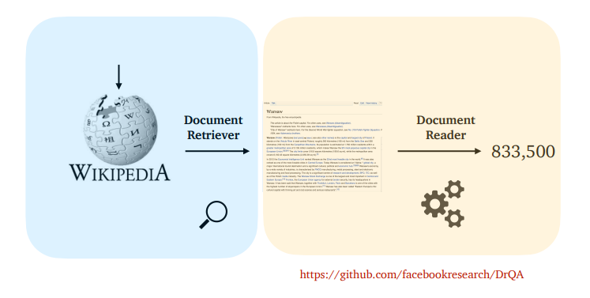
Figure 6. Retriever-reader framework.
The problem is formulated like this:
We use a TF-IDF information-retrieval sparse model for retrieving passages. And we use a neural network for reading comprehension from the passages.
Both the retriever and reader can be trained jointly with BERT models for both. Recent work has shown that sometimes you don’t even need the retriever! T5, for example, can simply be trained to generate the answers. Other work has shown that a reader model may not even be needed! Phrases and text can be densely encoded and nearest neighbors search can be ran.
Natural Language Generation#
Natural Language Geenration (NLG) is a sub-field of NLP. This field focuses on building a system that can automatically produce coherentt and useful written or spoken text.
We see applications of NLG in dialogue systems like Siri and Alexa and chatbots. NLG systems also are great at summarizing text, generating text from data, describing visual images.
An autoregressive text generation model will generate a new token/word based on previous words.
Decoding From NLG Models#
A decoding algorithm takes this probability distribution and converts them to a token. More formally, it is defined mathematically below.
There are many different decoding algorithms. The most popular is the greedy method that simply takes the argmax of the distribution of tokens. There is also beam search which is still greedy but has a wider array of candidates.
Many decoding algorithms generate repetitive text which we don’t want. Ways to counteract this is to have a heuristic telling the model to not repeat \(n\)-grams.
Top-k sampling samples tokens randomly from the top-k most likely. This kind of helps with the repetition problem. This is good but is a little problematic because the higher \(k\) is, the more diverse the outputs are, the higher chance they have to make less sense. With a lower \(k\), outputs would be repetitive.
Top-p (nucleus) sampling samples all tokens in the top \(p\) cumulative probability mass. This ameliorates the hard threshold of selecting a \(k\) because depending on the sentence and the previous sequence of tokens, the distribution of the next token changes.
Another concept that can improve these decoding algorithms is temperature \(\tau\).
This temperature allows you to controls the distribution of the tokens. A temperature > 1 makes for more diverse outputs (more uniform). A temperature < 1 spikes the distribution and makes for less diverse outputs (more repetitive). This concept helps all the previous decoding methods we described but not argmax sampling!
There are other more complex methods for decoding.
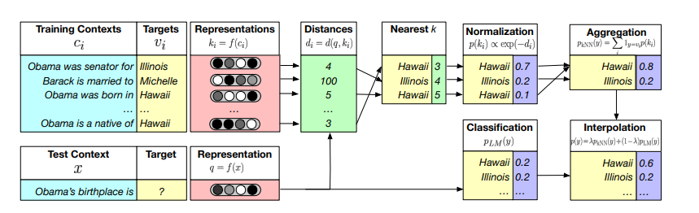
Figure 1. Re-balancing distribution of tokens based off of a cached database.
In Figure 1, from what I understand, the authors rebalance the distribution of tokens at time step \(t\) with an induced distribution \(P_{phrase}\). I would think this not only betters the repetition problem (in certain contexts) but also lends itself to more human-like/understandable text.
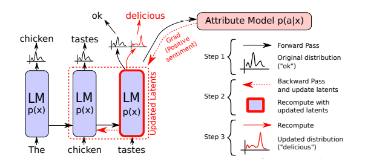
Figure 2. Backpropagation-based distribution re-balancing.
In Figure 2, the authors there introduced an attribute model which will enforce certain characteristics in how your NLG model will learn. It can enforce behavior like sentiment.
Instead of re-balancing a distribution, we can also change the ranking of tokens with a ranking algorithm. We can define a score to approximate the quality of sequences and re-rank tokens by this score.
Training NLG Models#
NLG models are trained with teacher forcing. That is, when the text generator (transformer decoder in the transformer case) learns to generate text, it will accept its own previously generated tokens as a sequence. Instead, it will be given the ground truth tokens. This helps it learn faster.
Training with teacher forcing leads to exposure bias because during inference time, the model won’t have access to these gold standard context tokens.
We train NLG models by maximizing the likelihood of the next word, but humans don’t talk like this! Training via maximizing likelihood leads to repetitive text. Some work has introduced another loss term deemed the unlikelihood loss. Which will force the model to lower the likelihood of previously-seen tokens. This limits repetition and increases diversity!
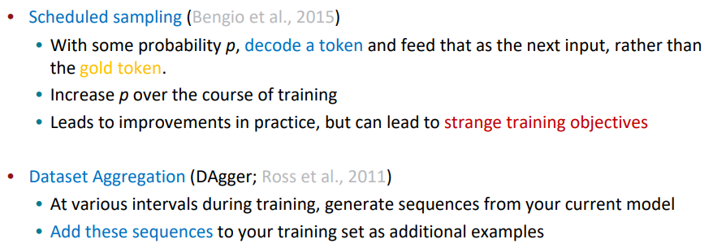
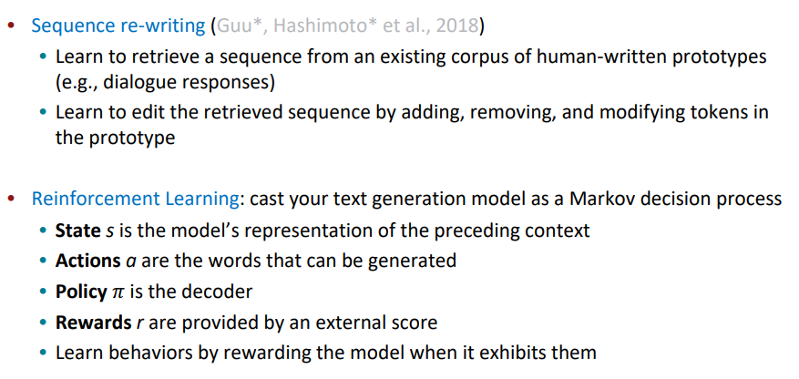
Figure 3. Some exposure bias solutions.
Evaluating NLG Systems#
There are 3 types of evaluation metrics:
content overlap metrics
model-based metrics
human evaluation
BLEU is an example of a content overlap metric. These types of metrics are not ideal for machine translation (language may have many synonyms, not a single way to generate something correct). There are also semantic overlap metrics which evaluate semantics or meaning rather than just matching tokens. Some popular semantic overlap metrics include PYRAMID, SPICE, and SPIDER.
Model-based metrics use learned representations of words and sentences to compute a semantic similarity between generated and reference text. Some popular model-based metrics include vector similarity, Word Mover’s distance, BERTSCORE, Sentence Movers Similarity, and BLEURT.
Human evaluation is expensive, but this type of evaluation can be more tailored towards a task (and be more accurate). Humans also are prone to errors.
Ethical Considerations#
Microsoft’s twitter chatbot AI tay.ai went from “humans are super cool” to harmful and negative statements in just a day. Language models learn biases in our culture from the text it is trained on.
These models need safeguards and need to be carefully managed and considered before deployment.
Coreference Resolution#
Coreference Resolution is the task of identifying all mentions that refer to the same entity in the world. For example: Vincent ate the spaghetti. He thought it was great. Here “he” refers to Vincent and “it” refers to spaghetti.
This sub-field of NLP is one of many cornerstones to teaching a machine how to understand and produce useful language. It has applications in full text understanding, machine translation.
Coreference Resolution is traditionally done in 2 parts:
detect the mentions (easy)
cluster the mentions (hard)
We can define a mention as a span of text referring to some entity like the following:
pronouns
named entities
Paris
noun phrases
For pronouns, we can use a part-of-speech tagger, NER systems for named entities, and a parser for noun phrases.
Types of References#
Specifically, Coreference is when 2 mentions refer to the same entity. A related linguistic concept is an anaphora where a term (anaphor) refers to another term (antecedent). For example,
Barack Obama said he would sign the bill.
Here “he” references “Barack Obama”.
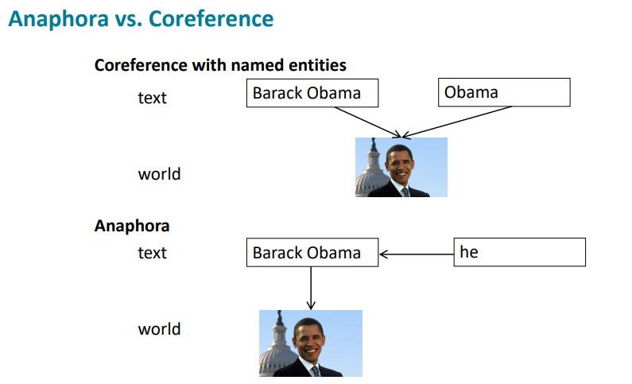
Figure 1. Coreference vs Anaphora.
So cases where we detect an anaphora may be a coreference. However not all anaphoras are coreferences.
Every dancer twisted her knee.
No dancer twisted her knee.
Both of these sentences contain anaphoric relationships but “her knee” doesn’t refer to a specific entity. These are called bridging anaphoras. If an anaphora is also a coreference, then it is called a pronominal anaphora. Cataphoras are the exact opposite of anaphoras. The reference follows after the antecedent.
Coreference and anaphora are just 2 examples of how we build a discourse model of whatever we are listening or reading.
Types of Coreference Models#
There are 4 types of coreference models:
rule-based (pronominal anaphora resolution)
mention-pair
mention-ranking
clustering (skipped in this lecture)
Hobbs’ naive algorithm is a rule-based model for tackling pronominal anaphora resolution.
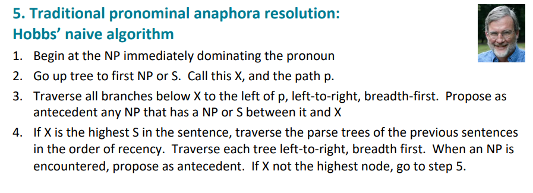
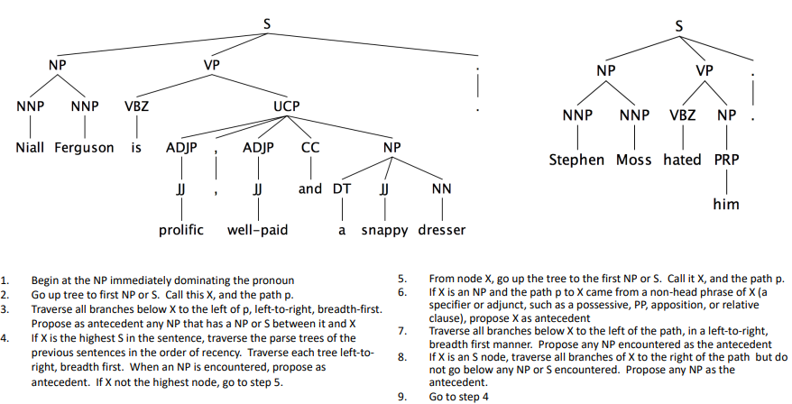
Figure 2. Hobbs’ naive algorithm.
There is an additional problem/nuance! Pronominal coreference can also be knowledge-based.
She poured water from the pitcher into the cup until it was full.
She poured water from the pitcher into the cup until it was empty.
Here “it” can mean the pitcher or the cup. The reason you know it is because of world knowledge! These are referred to as Winograd Schemas.
Mention-pair is another method for coreference resolution. We can train a binary classifier that assigns every pair of mentions a probability of being coreferent.
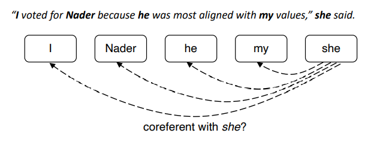
Figure 3. Mention-pair approach.
We can train it kind of contrastively by maximizing the likelihood of actual coreferences to have a predicted probability of 1 while negative pairs would be minimized.
This approach explodes with more mentions as you can tell!
Mention-ranking, from what I understand, is an extension of that by adding an NA token in the front so not all mentions need to associated with another mention. Mention-ranking is characterized by assigning each mention its highest scoring candidate antecedent according to the model.
This “model” can be a statistical classifier, neural network or more complex methods.
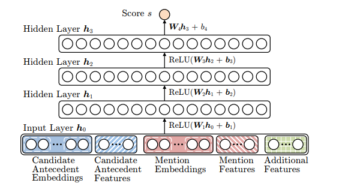
Figure 4. Neural network for coreference resolution.
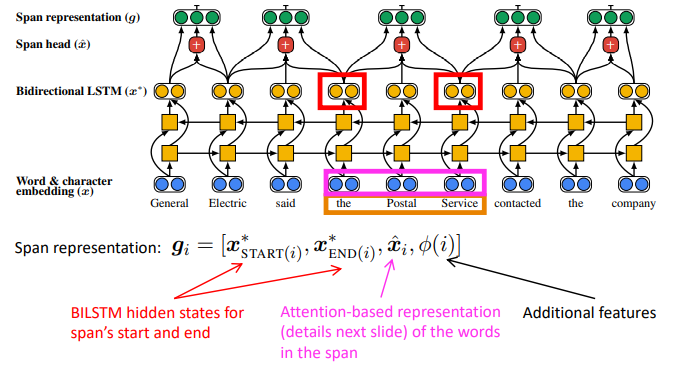
Figure 5. BiLSTM for coreference resolution.
Modern day SOTA methods use BERT!
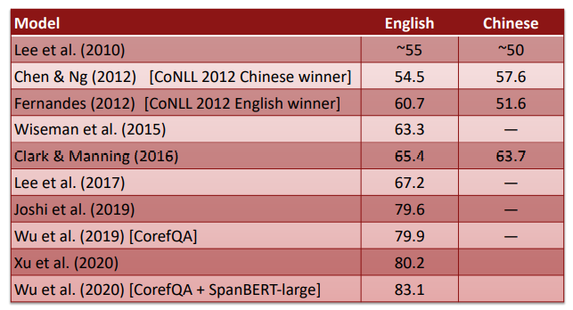
Figure 6. Different method performances.